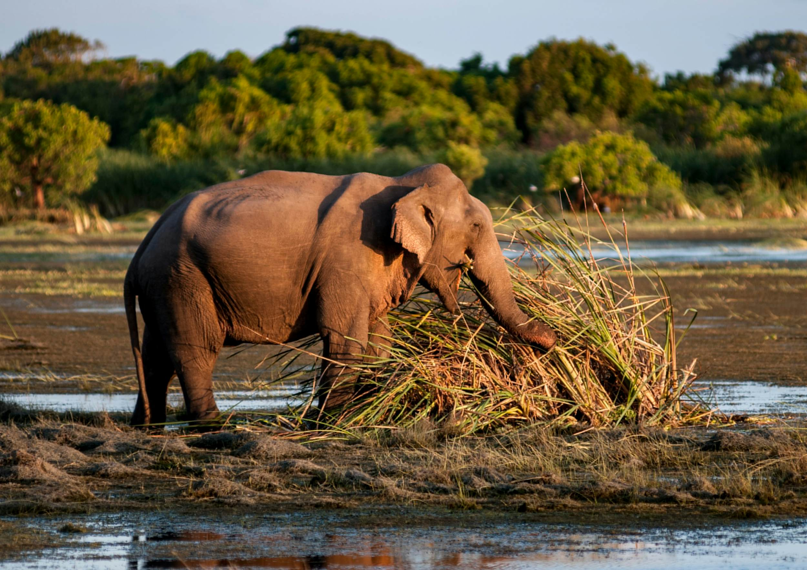

The Department of Wildlife Conservation
About Us
The Department of Wildlife Conservation is dedicated to the preservation and protection of our rich biodiversity. Established with the mission to safeguard the natural habitats and diverse wildlife populations, we strive to strike a harmonious balance between human development and the conservation of our planet's precious ecosystems.
Mission
Our primary mission is to ensure the sustainable management of wildlife resources, promote environmental education, and enforce regulations that safeguard the welfare of both wildlife and humans. Through scientific research, habitat restoration, and community engagement, we aim to contribute to the global efforts towards biodiversity conservation.
Protected Areas

Sinharaja Forest

Minneriya National Park

Gal Oya National Park

Kumana National Park